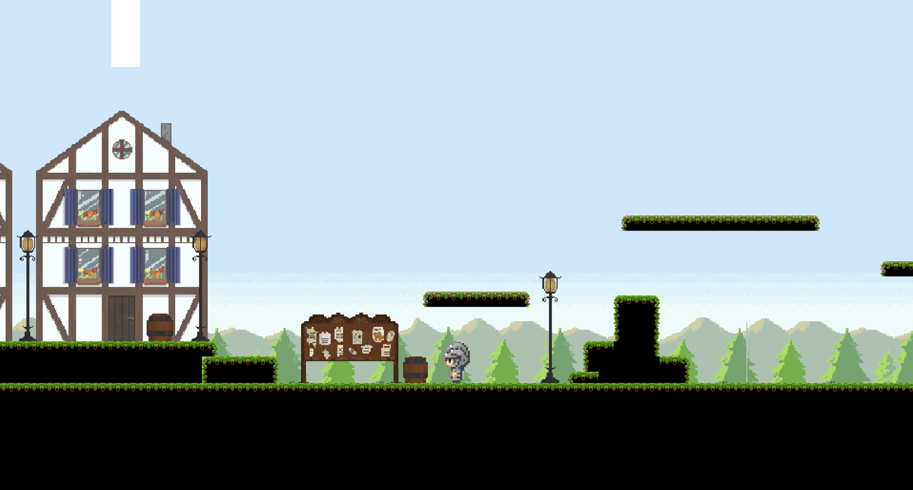

Game Projects
Dar Rana
- Genre: Narrative Adventure, Tactical Turn-based Combat
- Engine: Unity Game Engine
- Role(s): Lead Developer, Lead Game Designer, Narrative Designer
- Team Size: 10
- Development Time: 5 months
Dar Rána is an episodic, decision-based Adventure Game with free-form turn-based Combat based in the Tactical RPG Genre.
Feather Beyond
- Genre: 2D RPG
- Engine: Unity Game Engine
- Role(s): Lead Developer, Lead Game Designer
- Team Size: 7
- Development Time: 5 months
Feather Beyond is prototype for a 2D RPG on loss and acceptance. It was developed in cooperation with the Tokyo University of Technology and the UNAM Mexiko City for the "Play Across Border" Student Project.

[Ex]Change
- Genre: Adventure
- Engine: Unity Game Engine
- Role(s): Gameplay Programmer
- Team Size: 8
- Development Time: 10 months
[Ex]Change is an adventure game, where the Player needs to exchange parts with other robots in order to proceed. It was developed in cooperation with the Tokyo University of Technology and the UNAM Mexiko City for the "Exchange" Student Project.

Two Connect
- Genre: Puzzle
- Engine: Unity Game Engine
- Role(s): Gameplay Programmer
- Team Size: 5
- Development Time: 5 months
Harnass the power of magnets and help the two monopole sisters Joy and Lucy reach the end of puzzling level

The Wind's Will
- Genre: Arcade Highscore Chaser
- Engine: Unity Game Engine
- Role(s): Gameplay Programmer
- Team Size: 4
- Development Time: 48h
The Wind's Will is an Arcade Game, where the Player must carry a lone dandelion seed as far as possible. It was developed for the 2023 Globale Game Jam under the theme "Roots".

The Long Journey
- Genre: 2D Action Adventure RPG
- Engine: Unity Game Engine
- Role(s): Assistant Gameplay Programmer
- Team Size: 3
- Development Time: 2 Weeks
The Long Journey is a game prototype, where the player must help an accomplished hero get home in time before age catches up with him.